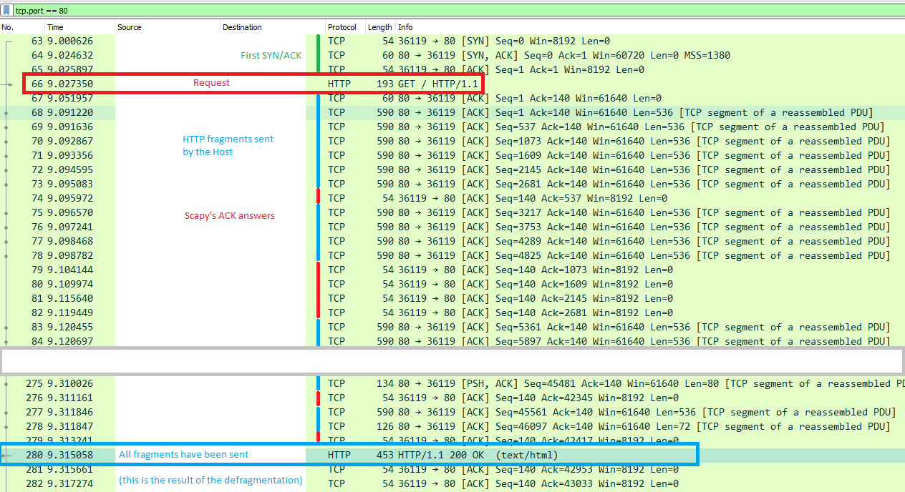

HTTP
Scapy supports the sending / receiving of HTTP packets natively.
HTTP 1.X
Note
Support for HTTP 1.X was added in 2.4.3, whereas HTTP 2.X was already in 2.4.0.
About HTTP 1.X
HTTP 1.X is a text protocol. Those are pretty unusual nowadays (HTTP 2.X is binary), therefore its implementation is very different.
For transmission purposes, HTTP 1.X frames are split in various fragments during the connection, which may or not have been encoded. This is explain over https://developer.mozilla.org/fr/docs/Web/HTTP/Headers/Transfer-Encoding
To summarize, the frames can be split in 3 different ways:
chunks: split in fragments called chunks that are preceded by their length. The end of a frame is marked by an empty chunkusing
Content-Length: the header of the HTTP frame announces the total length of the frameNone of the above: the HTTP frame ends when the TCP stream ends / when a TCP push happens.
Moreover, each frame may be additionally compressed, depending on the algorithm specified in the HTTP header:
compress: compressed using LZWdeflate: compressed using ZLIBbr: compressed using Brotligzip
Let’s have a look at what happens when you perform an HTTPRequest using Scapy’s TCP_client (explained below):

Once the first SYN/ACK is done, the connection is established. Scapy will send the HTTPRequest(), and the host will answer with HTTP fragments. Scapy will ACK each of those, and recompile them using TCPSession, like Wireshark does when it displays the answer frame.
HTTP 1.X in Scapy
Let’s list the module’s content:
>>> explore(scapy.layers.http)
Packets contained in scapy.layers.http:
Class |Name
------------|-------------
HTTP |HTTP 1
HTTPRequest |HTTP Request
HTTPResponse|HTTP Response
There are two frames available: HTTPRequest and HTTPResponse. The HTTP is only used during dissection, as a util to choose between the two.
All common header fields should be supported.
Default HTTPRequest:
>>> HTTPRequest().show()
###[ HTTP Request ]###
Method= 'GET'
Path= '/'
Http_Version= 'HTTP/1.1'
A_IM= None
Accept= None
Accept_Charset= None
Accept_Datetime= None
Accept_Encoding= None
[...]
Default HTTPResponse:
>>> HTTPResponse().show()
###[ HTTP Response ]###
Http_Version= 'HTTP/1.1'
Status_Code= '200'
Reason_Phrase= 'OK'
Accept_Patch43= None
Accept_Ranges= None
[...]
Use Scapy to send/receive HTTP 1.X
Scapy uses Sessions classes (more specifically the TCPSession class), in order to dissect and reconstruct HTTP packets.
This handles Content-Length, chunks and/or compression.
Here are the main ways of using HTTP 1.X with Scapy:
HTTP_Client: Automata that send HTTP requests. It supports theSSP()mechanism to support authorization with NTLM, Kerberos, etc.HTTP_Server: Automata to handle incoming HTTP requests. Also supportsSSP().sniff(session=TCPSession, [...]): Perform decompression / defragmentation on all TCP streams simultaneously, but only acts passively.TCP_client.tcplink(HTTP, host, 80): Acts as a raw TCP client, handles SYN/ACK, and all TCP actions, but only creates one stream. It however supports some specific features, such as changing the source IP.
Examples:
Let’s perform a very simple GET request to an HTTP server:
from scapy.layers.http import * # or load_layer("http")
client = HTTP_Client()
resp = client.request("http://127.0.0.1:8080")
client.close()
You can use the following shorthand to do the same very basic feature: http_request(), usable as so:
load_layer("http")
http_request("www.google.com", "/") # first argument is Host, second is Path
Let’s do the same request, but this time to a server that requires NTLM authentication:
from scapy.layers.http import * # or load_layer("http")
client = HTTP_Client(
HTTP_AUTH_MECHS.NTLM,
ssp=NTLMSSP(UPN="user", PASSWORD="password"),
)
resp = client.request("http://127.0.0.1:8080")
client.close()
Start an unauthenticated HTTP server automaton:
from scapy.layers.http import *
from scapy.layers.ntlm import *
class Custom_HTTP_Server(HTTP_Server):
def answer(self, pkt):
if pkt.Path == b"/":
return HTTPResponse() / (
"<!doctype html><html><body><h1>OK</h1></body></html>"
)
else:
return HTTPResponse(
Status_Code=b"404",
Reason_Phrase=b"Not Found",
) / (
"<!doctype html><html><body><h1>404 - Not Found</h1></body></html>"
)
server = HTTP_Server.spawn(
port=8080,
iface="eth0",
)
We could also have started the same server, but requiring NTLM authorization using:
server = HTTP_Server.spawn(
port=8080,
iface="eth0",
mech=HTTP_AUTH_MECHS.NTLM,
ssp=NTLMSSP(IDENTITIES={"user": MD4le("password")}),
)
Or basic auth:
server = HTTP_Server.spawn(
port=8080,
iface="eth0",
mech=HTTP_AUTH_MECHS.BASIC,
BASIC_IDENTITIES={"user": MD4le("password")},
)
TCP_client.tcplink:
Send an HTTPRequest to www.secdev.org and write the result in a file:
load_layer("http")
req = HTTP()/HTTPRequest(
Accept_Encoding=b'gzip, deflate',
Cache_Control=b'no-cache',
Connection=b'keep-alive',
Host=b'www.secdev.org',
Pragma=b'no-cache'
)
a = TCP_client.tcplink(HTTP, "www.secdev.org", 80)
answer = a.sr1(req)
a.close()
with open("www.secdev.org.html", "wb") as file:
file.write(answer.load)
TCP_client.tcplink makes it feel like it only received one packet, but in reality it was recombined in TCPSession.
If you performed a plain sniff(), you would have seen those packets.
sniff():
Dissect a pcap which contains a JPEG image that was sent over HTTP using chunks. This is able to reconstruct all HTTP streams in parallel.
Note
The http_chunk.pcap.gz file is available in scapy/test/pcaps
load_layer("http")
pkts = sniff(offline="http_chunk.pcap.gz", session=TCPSession)
# a[29] is the HTTPResponse
with open("image.jpg", "wb") as file:
file.write(pkts[29].load)
HTTP 2.X
The HTTP 2 documentation is available as a Jupyter notebook over here: HTTP 2 Tuto